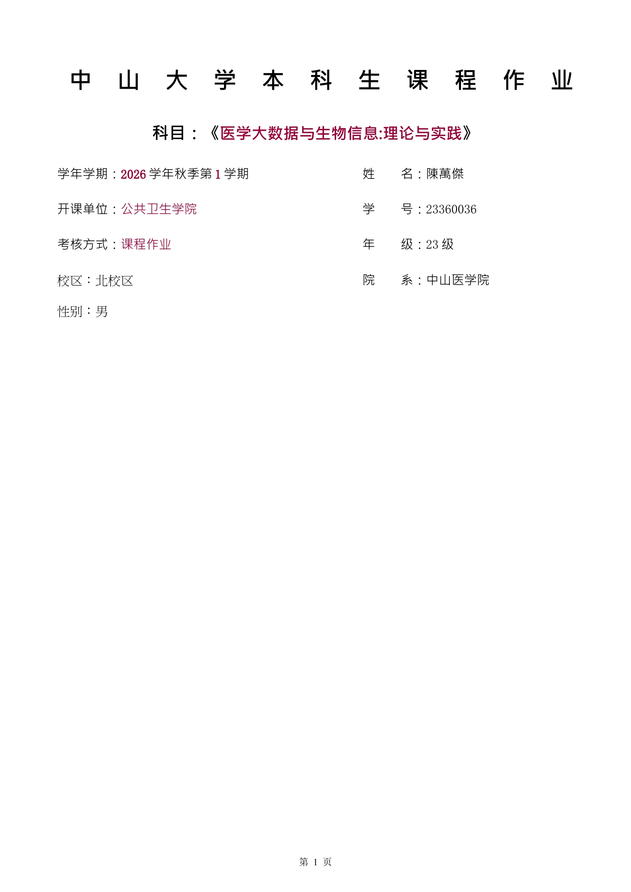

TCGA-LIHC / 扩展作业
课程分析之后，
再检查结果是否稳妥。
课程版已经完成差异分析和通路富集。这份扩展作业沿用同一批输入、配对设计、数据库和显著性标准，补充检查样本差异与输入处理的影响，再结合原始研究讨论基因功能。
01
PCA 与样本相关性
GroupY 聚得较紧，GroupX 更分散，P4_X 与其余样本差异尤其明显。相关性图提供了相近的观察。该样本仍保留在配对分析中，解释时考虑这一异质性。
02
取整敏感性验证
将含小数的输入取整后另跑模型，得到 1,904 个差异基因，包含主分析全部 1,902 个，Jaccard = 0.99895。主文仍使用排除非整数基因的分析；取整结果用于检查影响。
03
GSEA 富集曲线
查看 Cell cycle 和 adaptive immune response 的运行富集曲线，以及集合成员在完整 Wald 排名中的位置。正 NES 对应 GroupX，负 NES 对应 GroupY。
04
原始研究解读
结合 EZH2 的 RNAi、FOXM1 的基因删除和 GPC3 的功能研究，区分文献中的机制证据与本次 mRNA 表达结果。表达上调本身不能证明突变、蛋白活性或因果关系。
在线阅读扩展报告
以下为扩展报告的逐页预览，共 17 页。Word 文件保留目录、三线表和上标交叉引用；可通过上方按钮下载。

第 1 页 / 17 · 点击页面可放大阅读
也可打开完整 PDF。扩展分析代码可从这里下载；运行时使用课程提交包中的 data 文件夹。
返回课程方法
按 13 个步骤查看本次提交报告中的结果与 R 代码。